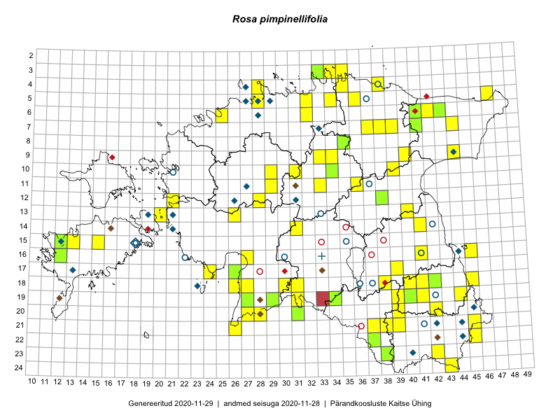

Rosa pimpinellifolia
Uuendatud: 2016-12-01
Kaardile koondatud taksonid: Rosa pimpinellifolia L.

Kaart põhineb 106 kirjel, neist vaatlusi 104 ja eksemplare 2.
Kuvatud viited 20 esimesele andmebaasikirjele, ülejäänud PlutoFis
- Tiit Hallikma, Toomas Kukk, Indrek Tammekänd: 2015-06-09: 12-28: ala
- Peedu Saar, Liina Oja: 2015-05-20: 18-27: ala
- Peedu Saar, Liina Oja: 2015-05-22: 18-27: GPS punkt
- Peedu Saar, Liina Oja: 2015-05-20: 18-26: ala
- Peedu Saar, Liina Oja: 2015-05-20: 18-26: GPS punkt
- Toomas Kukk, Thea Kull, Timo Luhamäe, Ott Luuk, Peedu Saar: 2015-06-28: 13-26: ala
- Toomas Kukk, Thea Kull, Timo Luhamäe, Ott Luuk, Peedu Saar: 2015-06-28: 13-26: GPS punkt
- Peedu Saar, Liina Oja: 2015-06-08: 10-34: GPS punkt
- Toomas Kukk, Raivo Kalle: 2015-05-12: 10-39: ala
- Peedu Saar, Liina Oja: 2015-06-10: 14-31: GPS punkt
- Peedu Saar, Thea Kull: 2015-06-17: 17-39: GPS punkt
- Peedu Saar: 2015-07-04: 18-45: GPS punkt
- Toomas Kukk, Raivo Kalle: 2015-05-12: 10-39: GPS punkt
- Peedu Saar, Elle Roosaluste: 2015-07-12: 13-20: GPS punkt
- Peedu Saar, Eerik Leibak: 2015-07-30: 16-41: GPS punkt
- Toomas Kukk, Raivo Kalle: 2015-05-12: 10-39: GPS punkt
- Peedu Saar: 2015-07-04: 18-45: ala
- Peedu Saar, Elle Roosaluste: 2015-07-12: 13-20: ala
- Peedu Saar, Eerik Leibak: 2015-07-30: 16-41: ala
- Peedu Saar, Liina Oja: 2015-06-08: 10-34: ala